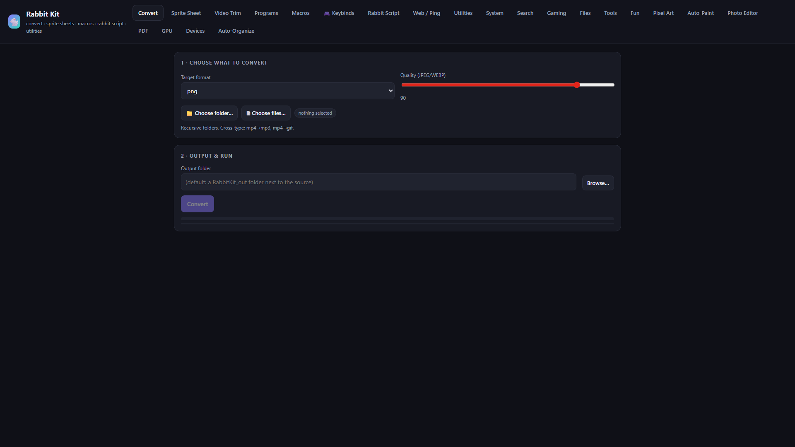
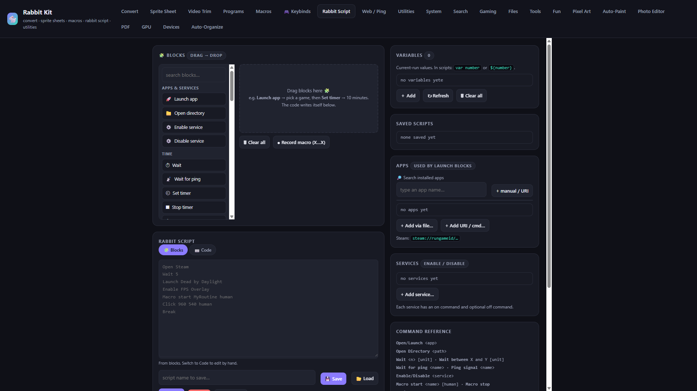
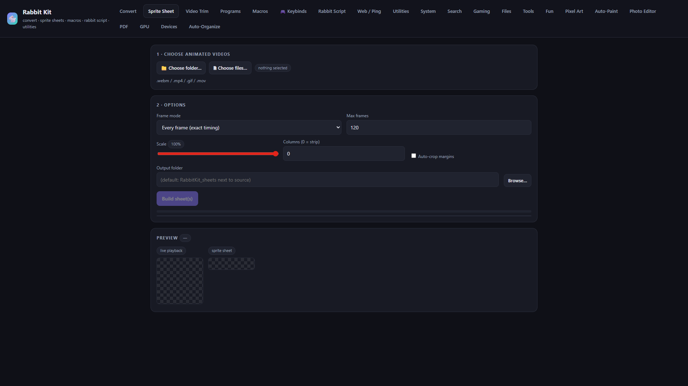
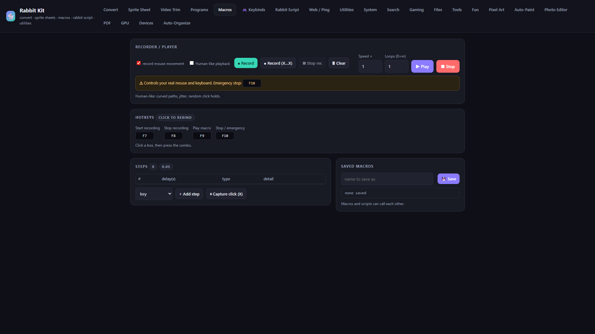
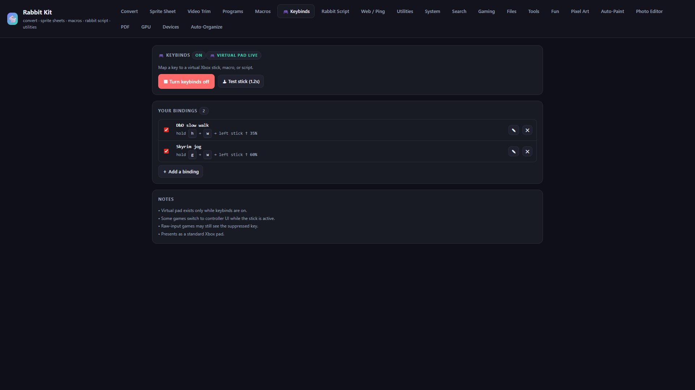
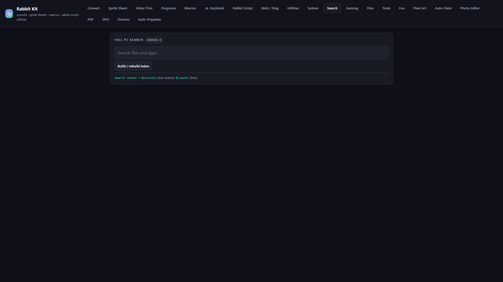
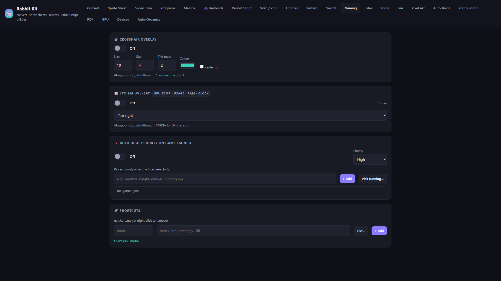
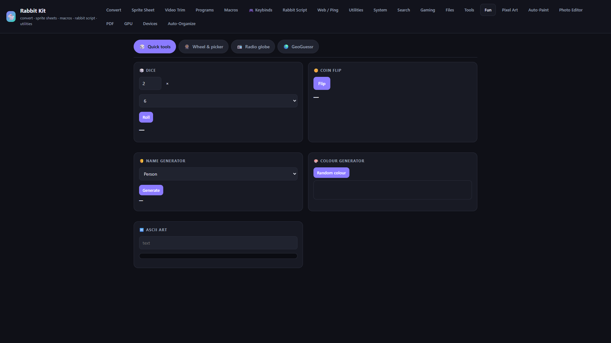

Convert anything
Bulk convert images, video, and audio. Recursive folders. Cross-type paths like mp4 to mp3 or gif.


Local Windows toolbox
Convert media, build sprite sheets, record macros, bind virtual sticks, and automate with Rabbit Script. Runs on your PC. Nothing leaves the machine unless you turn Online on.
Bulk convert images, video, and audio. Recursive folders. Cross-type paths like mp4 to mp3 or gif.

Turn webm, mp4, gif, or mov into a horizontal strip and a ready loader script. ffmpeg under the hood.

Record mouse and keyboard, edit steps, loop, and playback with optional human-like motion. Global hotkeys. F10 always stops.

Keybinds push a virtual Xbox stick to the deflection you set. Or fire a macro or Rabbit Script from a held key.

Drag blocks or write code. Launch apps, wait, ping, click, call macros and scripts, build overlays. Variables with var name or ${name}.
Build a local index, find files and apps fast, and pull results into scripts as ${result} and ${count}.

Crosshair, GPU HUD, auto high-priority on launch, and game shortcuts in one place.

Dice, wheels, radio globe, GeoGuessr, and more when you want a break from tooling.

Binds to 127.0.0.1 only. Settings and macros stay in a local data folder. Online features are opt-in and stay hidden when you are offline.
Windows app. The installer is about 700 KB. It sets up Python, ffmpeg, WebView2 if needed, then opens Rabbit Kit in its own window.
Download installerRabbitKit-Setup.exeNeeds Windows 10/11. First install may take a few minutes while packages download.